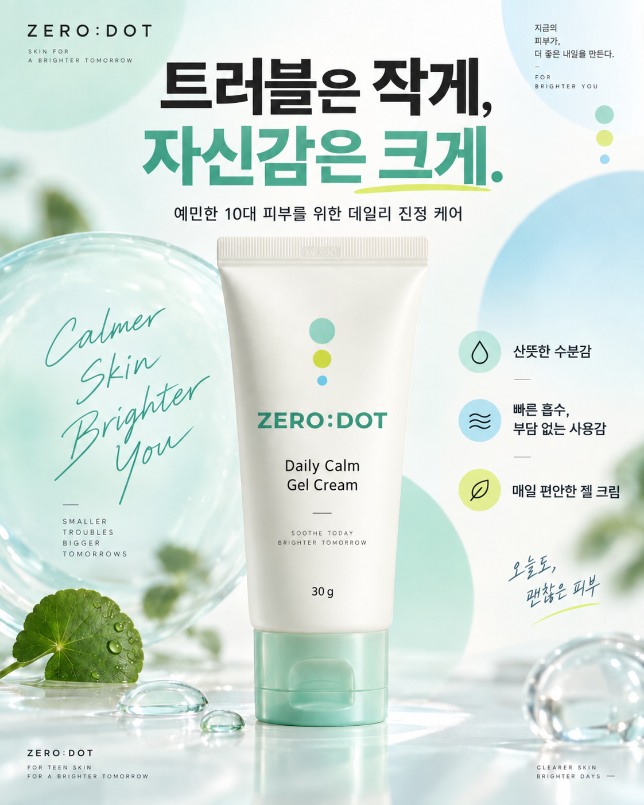
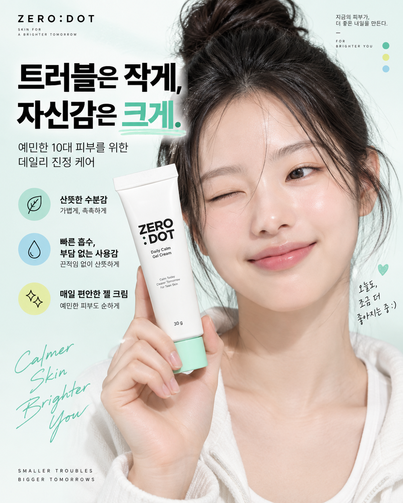
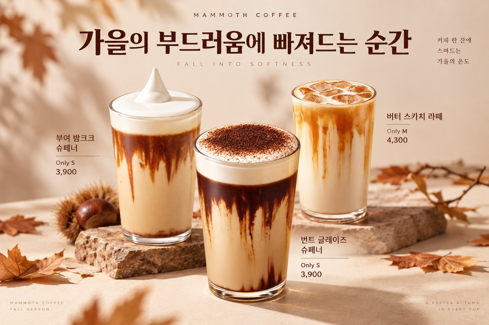
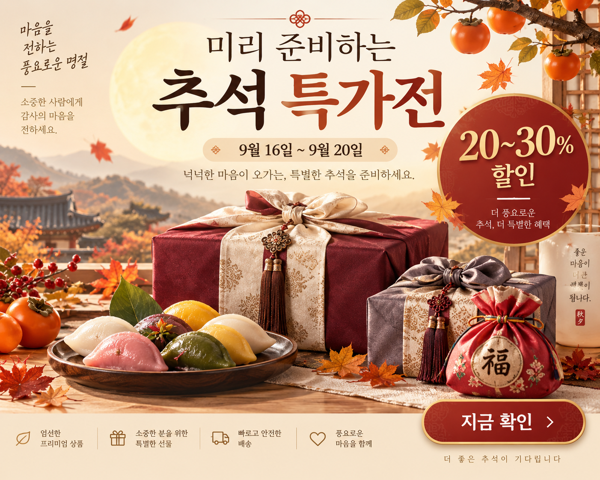

01 / PRODUCT
제품 중심 포스터
제품의 형태와 청량한 수분감을 중심에 둔 시안
SELECTED WORK 03 / AI POSTER DESIGN
화장품의 산뜻함부터 가을의 따뜻함까지. AI 이미지 제작을 활용해 서로 다른 분위기의 포스터 네 장을 구성했습니다.
화장품 2점 · 가을·추석 2점
제품의 형태와 청량한 수분감을 중심에 둔 시안

인물과 제품을 함께 배치해 사용 장면을 담은 시안

계절의 색과 음료의 질감을 담은 커피 포스터

보름달과 선물의 풍성함을 표현한 명절 포스터
이미지를 누르면 원본 크기로 볼 수 있습니다.